Chapter 3 Working with Variables
3.1 Variable View in Data Editor
Variables in SPSS vary in length and may consist of letters, numbers, dates, or dollar values. Some values, such as “don’t know” replies on a survey, may be codes for missing values. SPSS allows you to label variables and values with more meaningful phrases that can appear in the output for greater clarity.
To view or edit the current format for a variable, double-click on the variable’s name in the Data Editor. Doing this will open the Variable View tab in the Data Editor window. Alternatively, select the “Variable View” tab at the bottom left corner of the data editor window.
Try it: Open Section2_Data.sav. Select “Variable View”.
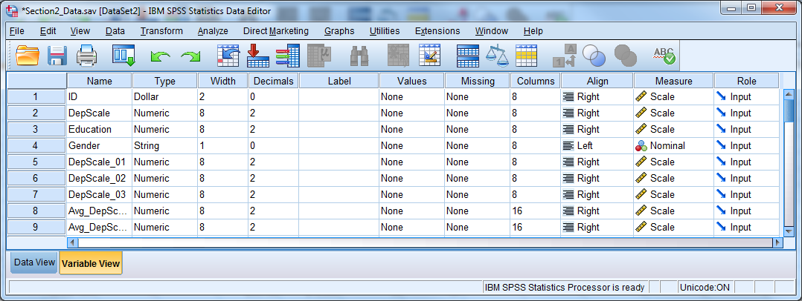
There are eleven columns in the Variable View, containing values that are attributes for the variables that you can change:
Name The name of each variable in the data set
Type The type (numeric, character, date, etc) and length
Width The amount of information in bytes stored in memory
Decimals The number of decimals displayed for numeric vars
Label A specific label for a variable
Values Variable value labels
Missing Missing value codes
Columns Column width for variable display
Align The alignment of values within a cell
Measure The measurement scale for a variable
Input The role of the variable when analyzing the data
3.1.1 Variable Name
Be sure the names follow these rules:
Variable names should be no more than 64 characters long, and preferably no more than 8 characters long.
Variable names must start with a letter.
Variable names may only have letters, numbers, or underscores in them.
Variable names may not have the following characters: %,$,#,@,!,+,*,~,",-,..
Variable names may not have blank spaces.
Each variable name must be unique; the same variable name can’t appear twice.
Variable names must be on one row only.
3.1.2 Variable Type
The most fundamental characteristic of a variable is its type. These are the four most important types:
Numeric includes comma, dot, and scientific notation types
String also called character, alpha, or alpha-numeric
Dollar includes custom currency type but is still numeric
Date is still numeric but displayed using hours, minutes, and seconds

Most statistical analyses use only numeric variables. SPSS can handle a short string variable, such as gender coded as “m” and “f”, when that variable defines groups for a t-test or an analysis of variance (ANOVA).
The Dollar type changes the way the values appear in the data editor and the output, but all analyses treat the Dollar type as numeric.
The appearance of a date variable does not affect the way that the .sav file stores the date. SPSS understands date/time variables as the number of seconds since midnight, October 14, 1582 which is a significant date marking a change in the Gregorian calendar. If you subtract one date from the other to create a new variable, the result will be in seconds. To change back to days, hours, or years, it is necessary to use a function to turn the information into a more usable, practical form. See the section Computing New Variables for more information.
Try it: Use Section2_Data.sav. Change the Variable Type for the ID variable from Dollar to Numeric.
 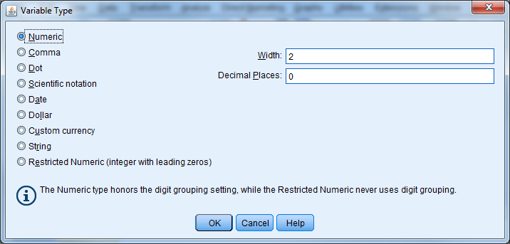
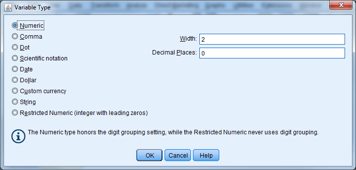
3.1.3 Variable Labels
Variable labels attach a description to a variable, and this description can show up in the output. To enter a variable label, click in the Label cell for a given variable in Variable View, and enter a description for the variable. Variable labels can be up to 255 characters as of Version 15.0.
Try it: Use Section2_Data.sav. Provide a label for DepScale (Depression Scale 1998).
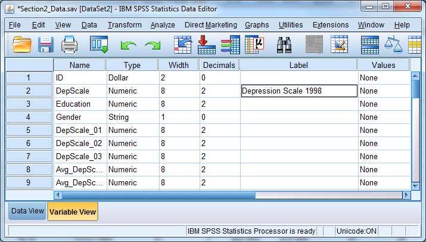
3.1.4 Value Labels
Value labels are similar, except that they refer to specific values within that variable. You don’t have to enter labels for all values. A value label can be up to 120 bytes long. Suppose the following question was in a survey:
Which of the following describes your political beliefs best?
1) Democrat 2) Republican 3) Libertarian 4) Other
You will enter the responses as 1, 2, 3, or 4. These numbers are arbitrarily, however, and some users may not know or may forget their meaning. Value labels allow the user to attach meaning to the numbers. Value labels are absolutely critical in large data files. Like variable labels, value labels will appear in many of the results provided by SPSS.
To assign value labels, click on the Values cell for a given variable, and click on the small grey box. Enter a number in the Value box, then the corresponding label in the Value Label box. Then press “Add”. If you do not press “Add”, the information you have typed for that value will be ignored.
Try it: Use Section2_Data.sav. Enter in value labels for variable Education:
1=High School or Less
2=Some College
3=College Graduate
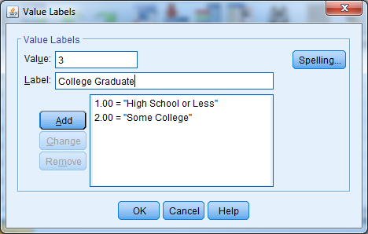
3.1.5 Missing Value Labels
There are two kinds of missing values: system-missing, in which the cell is empty, and user-missing, which flags a value as an invalid response. There often could be several reasons that a value is not available, and user-missing values allow us to discriminate between them. Examples of user-defined missing values are:
99 “Don’t Know” reply on a survey
777 Inapplicable, such as with number of births for a male respondent
-999 Respondent refused to answer, which often occurs with income
Enter user-missing values just like any other response during data entry. You need to tag the value as missing, however, so that SPSS does not include it in any computations. Consider the repercussions if we forgot to specify the 777 in the above example as Inapplicable, and then attempted to calculate the average number of births!
You can specify user-missing values by clicking on the cell in the Missing column for a given variable, and then clicking on the small grey box that appears as “(…)”. You may specify single values or a range of values.
Try it: Use Section2_Data.sav.Enter missing value codes for Education (99).

3.1.6 Columns & Alignment
You can change the alignment of the data by changing the Columns or Align attributes. You can use the Align attribute to center values or align them to the right or left of the cell in the Data Editor. Additionally, you can decrease or increase the width of the columns using the Columns attribute. A shortcut is to place the mouse at the right edge of a variable name, click on the border, and drag the column to be wider or narrower.
Asterisks (*) in the cells within a particular column mean that the column is not wide enough to display the data values. Simply increase the column width and the values should appear properly in the Data Editor. Another possible problem might be that the width is too small to display all of the information for a variable.
The Columns and Align attributes have no effect on the data; they only affect the way you see the data in the editor.
3.1.7 Measure
Each variable in SPSS may be designated as
Scale a continuous variable
Ordinal a categorical variable with natural ordering
Nominal categorical without any natural ordering
Graphs from the Interactive graphics method use this information. This field has no bearing for most procedures.
Try it: Use Section2_Data.sav. Change the Measure for the Education variable from Scale to Ordinal.
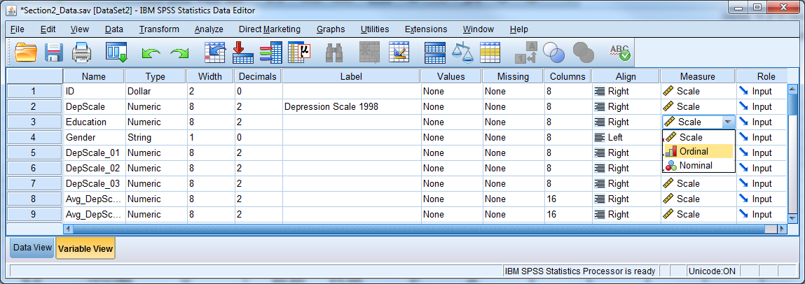
3.1.8 Copy and Paste Variable Attributes
You can set up any of the attributes discussed above, such as type, labels, missing values, and column format, and apply them to numerous variables all at once. Suppose a researcher has a series of 50 variables that all have values 1 through 5 as follows:
1 Strongly disagree
2 Disagree
3 Neutral
4 Agree
5 Strongly agree
Value labels would be useful for these variables, but it would be extremely tedious to set up value labels for all 50 variables. Set up the value labels for one of the 50 variables, and then click on the cell containing the value labels for that variable. Select “Copy” from the “Edit” menu or hit CTRL + C, and then highlight the value labels cells for the remaining 49 variables by clicking on the first empty cell and dragging downward. Select “Paste” from the “Edit” menu or hit CTRL + V, and the value labels will be applied to the remaining 49 variables instantly. You can also right-click and use the copy and paste functions. You can use this same copy and paste feature for other variable attributes and save a great deal of time!
Try it: Use Section2_Data.sav. Copy and paste the missing value code from Education to DepScale.
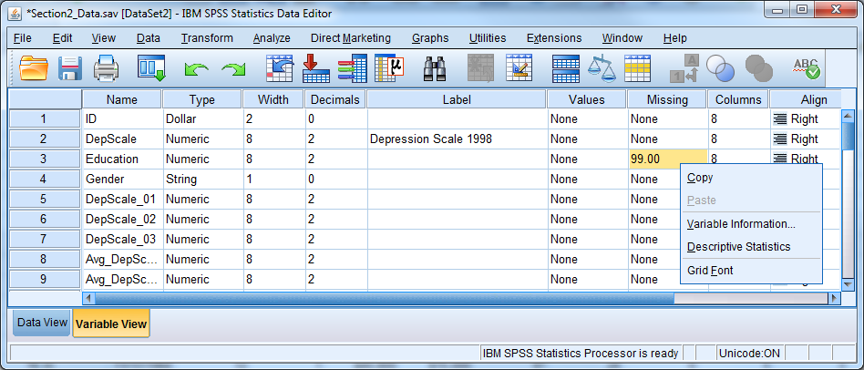 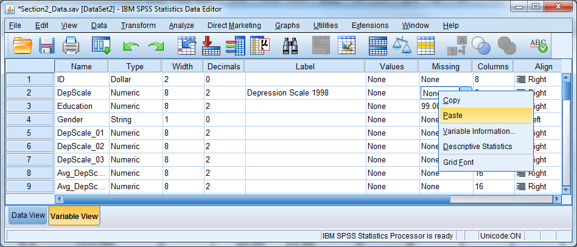
3.1.9 Exercise 3 – Variable Attributes
Open Exercise3_Data and go to Variable View. Practice defining the correct attributes to each variable by following the code book below.
3.2 Creating New Variables and Defining the Correct Attributes
To create a new variable in SPSS for entering data, simply double-click on an empty column’s heading, or start entering data directly into the column in Data View. To enter values, first click in an empty cell; then type each value and press either return or the down arrow.
During data entry, be aware that the order of cases in an SPSS data file can change because certain procedures require that cases be sorted. Therefore, be careful to match values with an ID variable. The case that occupied the first row in the file a week ago may not be in the first row any longer!
New variables, including those created by computation or recoding, appear at the far right of the data file. Use the scroll bar at the bottom to verify that a new variable was properly created.
Cut, copy, or paste a variable or insert a new empty column by right clicking on a variable name.
A pasted variable is not inserted in between existing variables. It replaces the highlighted column entirely, and could over-write an existing variable. Be sure to create a new, blank column and paste on top of that.
Try it: Use Section2_Data.sav. Create a new variable called NewVar.

3.3 Computing Variables
You can use the COMPUTE command to create new numeric or string variables by:
Assigning a particular value to all cases, or a subset of cases
Transforming a variable by taking a log, or another mathematical function
Creating a sum, average, or other summary of several existing variables
Helpful Hint: You can use the COMPUTE procedure to edit or overwrite an existing variable, but we highly recommend that you create new variables. If you do over-write an existing variable, be aware that some old values may not be overwritten. If some of the necessary information is missing for a certain case in the file, and the software cannot compute the new value, then the value from the old variable will remain.
Select Transform - Compute Variable and enter a name for the new variable in the upper left box, labeled “Target Variable.” SPSS will automatically create the new variable when it executes the compute command.
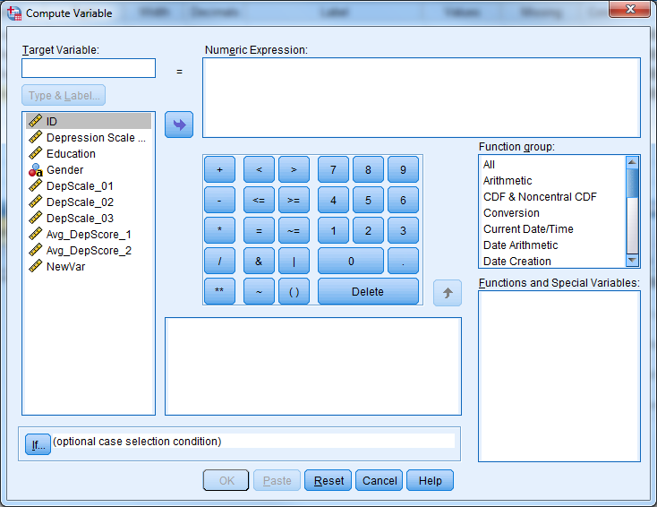
By default, SPSS assumes that the user wants to compute a numeric variable. If you want to create a string variable, click “Type & Label” underneath the new variable name, and select “String.”
In the box titled “Numeric Expression”, provide the actual formula or value for the new variable. You may write the numeric expressions by hand or insert variables and functions using the mouse.
Helpful Hint: Click on the function name to get a function description in the dialogue box.
If you want to create new dollar or date variables, then proceed as if creating a numeric variable. The type can be changed after the compute command is used. Note that seconds are the units of measurement for date variables. To create date variables, we must use functions specifically designed for the date variable type. See the List of Functions below for more information.
3.3.1 Dealing with Missing Data
Applying a function to a variable containing missing values will result in a variable with corresponding system-missing values.
When taking the mean or sum of a set of variables, be sure to use the mean() and sum() functions. SPSS only evaluates formulas such as “(var1 + var2 + var3 + var4)/4” if all four variables have valid, non-missing values.
By contrast, the software evaluates the formula “mean(var1, var2, var3, var4)” as long as an individual has at least one valid response. You can also stipulate that SPSS perform the calculation only when there are a minimum number of valid responses. The formula “mean.3(var1, var2, var3, var4, var5)”, for example, would mean that an individual must have answered at least 3 of the 5 questions. The new variable will have a missing value otherwise.
Try it: Use Section2_Data.sav. Calculate the average depression score using DepScale_01, DepScale_02, DepScale_3. First use the function “mean”. Next write the expression by hand. Investigate the differences.

 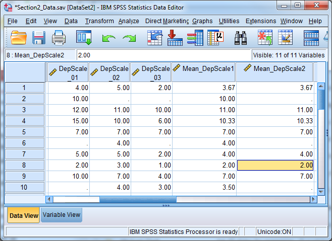
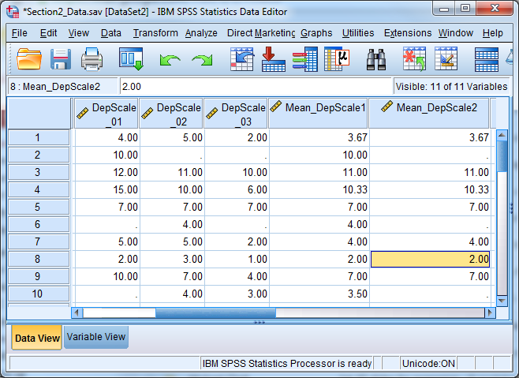
3.3.2 List of Functions Available in the Compute Command
Arithmetic Operators:
+ Addition
- Subtraction
* Multiplication
/ Division
** Exponentiation
Arithmetic Functions:
ABS Absolute value
RND Round
TRUNC Truncate
MOD Modulus (remainder)
SQRT Square root
EXP Exponential
LG10 Base 10 log
LN Natural log
ARSIN Arcsin
ARTAN Arctangent
SIN Sine
COS Cosine
Statistical Functions:
SUM(.n) Sum of arguments
MEAN(.n) Mean of arguments
SD(.n) Standard deviation of arguments
VARIANCE(.n) Variance of arguments
CFVAR(.n) Coefficient of variation of arguments
MIN(.n) Minimum of arguments
MAX(.n) Maximum of arguments
Missing Values Functions:
MISSING True if the value is missing
NMISS Number of missing values across variables but within cases
NVALID Number of non-missing values across variables but within cases
Across-case Function:
LAG Value from previous case, or from n cases earlier if there is a second argument n
Date and Time Functions:
CTIME.xxx SPSS time values to common units
DATE.xxx Common units to SPSS date values
TIME.xxx Common units to SPSS time values
XDATE.xxx SPSS date values to common units
Other Functions:
RV.UNIFORM Uniform pseudorandom no.
RV.NORMAL Normal pseudorandom no.
CDF.NORMAL Standard normal cumulative dis.
Logical Functions:
RANGE True if value is within range
ANY True if any value matches
String Functions:
ANY Same as for numeric values
CONCAT Concatenate
INDEX Index from left
LAG Same as for numeric values
LENGTH Defined length
LOWER Convert to lower case
LPAD Pad left
LTRIM Trim left
MAX Greatest value
MIN Least value
NUMBER Convert to a number
RANGE Same as for numeric values
RINDEX Index from right
RPAD Pad right
RTRIM Trim right
STRING Convert to a string
SUBSTR Substring
UPCASE Convert to upper case
3.3.3 Count Values
One useful way to compute new variables is through the “Count Values within Cases” procedure. This procedure counts how many times particular values occur, within each case, across certain variables. Suppose we have a data set of students where we recorded their scores on ten separate quizzes over the course of a semester. We could use “Count Values within Cases” to tally up the number of A’s each student earned.
To use the Count Values within Cases procedure:
Go to Transform - Count Values within Cases.
Specify a new variable name under “Target Variable”.
Place the variables to be examined in the “Variables” box.
Click “Define Values”, and type the values to be counted.
Click “Continue”, then “OK”.

Recoding Variables
Recoding a variable means changing or “mapping” its values to new ones. Often, you will need to convert string variables into numeric variables in order to use them in a certain statistical procedure. Recoding is also a way to collapse a continuous variable into categories.
Below are representations of some possible recodes:
“Male” – 1
“Female” – 0
1 – 0
2 – 1
3 – 2
4:15 – 9
3.3.4 Manual Recoding
There are two ways to recode in SPSS:
Recode Into Same Variables Not Recommended
Recode Into Different Variables Recommended
By using “Recode Into Different Variables”, your original variable will not change, which is not the case with “Recode Into Same Variables”. “Recode Into Same Variables” is risky since you will not be able to undo the changes if you make a mistake.
Select Transform - Recode into Different Variables"

In the “Recode Into Different Variables” dialogue box:
Select the old (original) variable.
Specify a new variable name, and click “Change”.
Click “Old and New Values”.
Specify each old value, or range of values, on the left side of the box and each new number you want assigned on the right side of the box. Click “Add” each time.
Make sure you include every original value. Unmentioned original values become missing values in the new variable.
Click “Continue”.
Click “OK”.
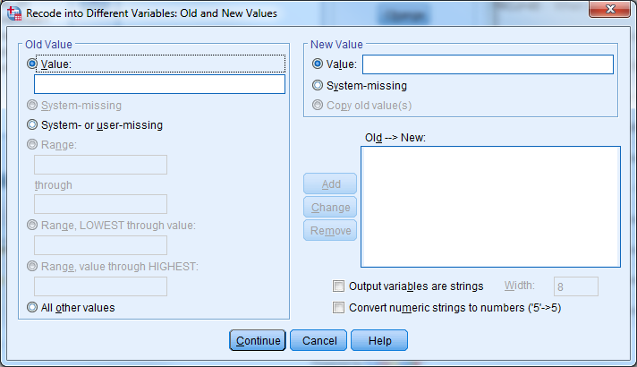
Note that when using “Recode Into Different Variables”, it is also possible to recode a numeric variable into a character (string) variable, or vice-versa:
Check the box marked “Output variables are strings” to change from numeric to string in the “Old and New Values” window
Check the box marked “Convert numeric strings to numbers” to change from string to numeric in the “Old and New Values” window.
Try it: Use Section2_Data.sav. Recode Gender with F=1 and M=2. Inspect the output.
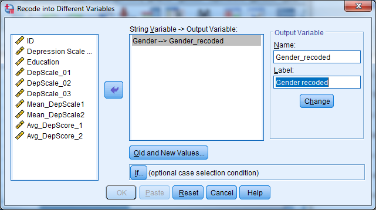

3.4 Automatic Recoding
The Automatic Recode procedure recodes any variable’s values into consecutive integers 1, 2, 3, etc…. The software codes the lowest numeric value, or the first value in alphabetical order in the case of string variables, to a 1 by default. The next lowest number or next item in alphabetical order becomes a 2, and so forth. Optionally, the recoding can begin with the highest number of the last string value in alphabetical order.
Automatic Recode always creates a new variable.
Helpful Hint: Automatic Recode is a quick way to make string variables (e.g., gender) ready for statistical procedures that require numeric variables.
To use Automatic Recode:
Go to Transform - Automatic Recode.
Choose the original variable to be recoded.
Specify a new variable name and click “Add New Name”.
Select the order – start numbering from smallest or largest values.

Helpful Hint: If you had assigned value labels for the old variable, those labels will carry over to the corresponding new values. If there were no value labels, then the old values themselves become the new labels.
Try it: Use Section2_Data.sav. Use Automatic Recode to recode Gender. Call this new variable AutoGender.
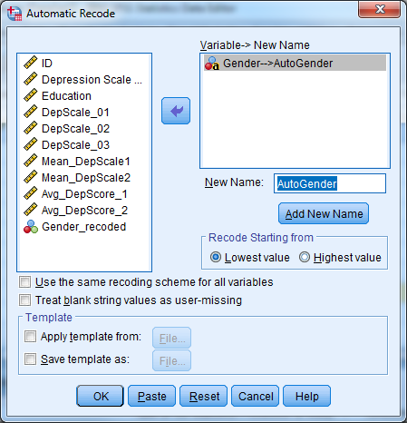
3.5 Conditional Transformations with If/Then Logic
The “If” button, which appears in the Compute, Recode, and Count dialogue boxes, represents an important feature in variable transformations. Using the “If” option, users can tell SPSS to perform calculations or recodes only if cases meet certain conditions.
For example, suppose we surveyed women regarding the number of times they had given birth, but women who had never been pregnant skipped that section of the questionnaire. We might now want to assign a “0” for the number of births for those women who had never been pregnant, to replace the missing entry they currently have.
Assuming that we have a string variable called “everpreg” coded “Y” and “N” for yes and no, and that our number of births variable is called “numbirth”, we would proceed as follows:
Go to Transform - Compute Variable
Put numbirth in the “Target Variable” box.
Place a 0 in the “Numeric Expression” box.
Click “If”.
Click “Include if case satisfies condition”.
Type everpreg = “N” in the condition box.
Click “Continue” and “OK”.
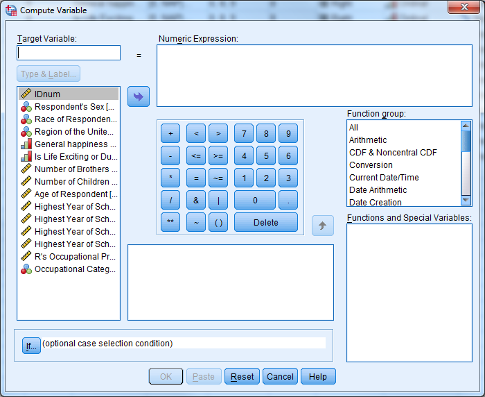
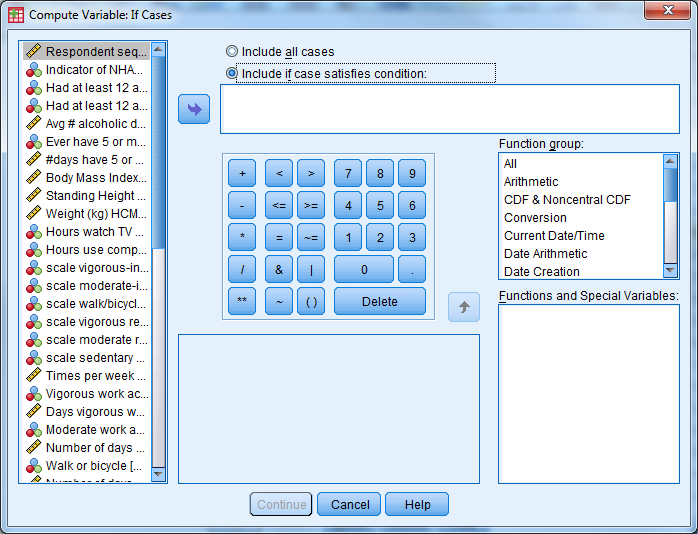
This “If” button, which allows transformations to take place for selected cases only, works exactly the same in the Compute, Recode, and Count procedures.
You can use the words and, or, and not within the If box to help write your criteria. Some examples of If expressions are as follows:
sex = “f” and age > 50 *women over 50
not missing(income) *participants whose income is known
educat = 5 or educat = 6 *respondents with a BA or MA
3.6 Rank Cases
You can perform variable transformations based on the ranked value for a particular variable. It may be more convenient to analyze the quartiles, for example, than the variables themselves.
Select “Transform” and then “Rank Cases” to recode a continuous variable into a new variable based on rank. Select the variable of interest and then click “Rank Types”. You can select quartiles in this dialogue box by checking the box for Ntiles and placing the number 4 in the blank space. SPSS will create a new categorical variable and add it to the end of the original dataset.
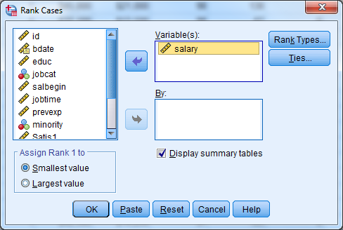

3.7 Exercise 4 – Computing and Transforming Variables
Open Exercise4_Data.
Compute a new variable that is the change from beginning salary to current salary for each employee.
Recode the education variable into a new variable according to the following
1=High School or Less (educ<=12)
2=Some College (12<educ<=16)
3=Bachelor’s Degree or Higher (educ>=17)